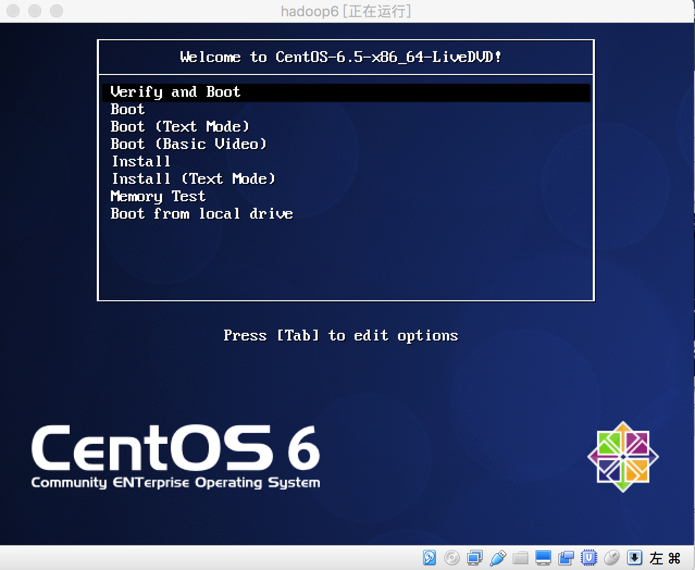
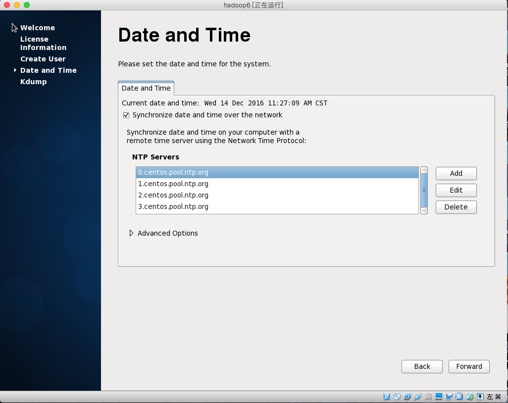
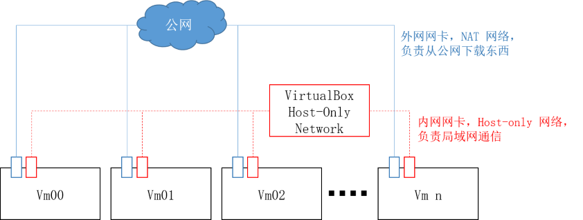

前言
阅读本文，需要具备Linux、计算机网络的基础知识。所以在文中出现的相关基础知识，均以链接的形式给出，务必理解该链接的内容后，继续阅读本指南。
集群搭建的环境多种多样，本文采用VitualBox安装5台虚拟机构建集群。具体环境：
- CentOS 6.5 64位
- VirtualBox 5.1.10 Mac版
- 本机macOS Sierra 10.12.1 i7 8G内存
单台装机
先下载CentOS的iso格式纯净镜像，可以下载LiveDVD和minimal两个版本。
本文采用LiveDVD版做演示。
打开virtualbox：

点击”新建”按钮：

选择版本，并命名：

点击”继续”按钮,改内存大小：

点击”继续”按钮,改虚拟硬盘：

点击“创建”按钮，改硬盘类型：
关于磁盘类型，参考：https://zhidao.baidu.com/question/1302436594642278379.html
点击”继续”按钮，改存储方式：

继续，改文件位置和大小：

点击”创建”,主界面显示该机器：

选中该机器，点击主界面”设置”按钮：

点击”系统”，修改”启动顺序”：

点击”网络”,修改网卡1：

为修改网卡2，先关闭该对话框，打开vitualbox管理界面：

点击偏好设置：

点击”网络”：

选择”仅主机（Host-Only）网络”：

点击添加按钮（右边绿色按钮），新增vboxnet1：

点击OK保存，再次选中该虚机（hadoop6）,打开主界面的”设置”按钮，点击”网络”，点击”网卡2”，勾选”启用网络连接”，选择连接方式：

选vboxnet1,则其余所有节点均需保持一致。点击OK保存。此时点击主界面的”启动”按钮：

选择Centos的iso文件所在位置，点击”启动”。在弹出黑色界面时（有9秒时间），按一次任意的某个键，进入Boot界面。选择第一种安装方式：verify and boot：

按下回车键，进入centos系统：

双击系统桌面的”install to hard drive”:

进入安装界面：

一路点击next按钮,点击yes即可。时区选亚洲上海,root账户的密码要牢记。然后，进入等待界面：

点击”close”,关闭安装界面：

关闭该虚拟机，调整系统启动顺序。选中该虚机，点击”设置”，点击”系统”,调整”启动顺序”，将”硬盘”放在第一位，将”光驱”放在最后一位：

点击ok保存，再次启动该虚机，进入设置页面：

一路forward即可，创建用户名和密码自己定义：

为集群选择同一时间，需要勾选synchronize date and time over the network.防止某个节点挂了以后和其他节点的系统时间不一致：

一路forward，点击finish,进入登陆界面：

注：如果采用minimal安装方法，装机方式仅有两处与上述不同：
选第一种安装方式
选skip，跳过检测
其余过程，同上述LiveDVD版安装过程。
集群搭建
重复上述步骤，安装5台虚拟机。此时需要配置集群的网络：配置网卡，修改hostname,添加host解析，添加普通用户。
配置网卡
通过上述步骤的装机方法，每台机器中都将有两个网卡eth0和eth1。eth0作为虚机网络的公网网口，eth1作为虚拟机网络的内网网口。
配置网卡，需要在目录：/etc/sysconfig/network-scripts下新建以ifcfg-ethX（X是一个数字，从0开始，一般到3结束。）文件。
所以，关于eth0的配置在：/etc/sysconfig/network-scripts/ifcfg-eth0;
关于eth1的配置在：/etc/sysconfig/network-scripts/ifcfg-eth1。
如果有不明白的地方，可以参考下文—-CentOS网络配置详解。
配置eth0
在System->Preferences->Network Connections，进行配置。
先编辑Auto eth0:
连接名修改为eth0，勾选所有用户可用，设置IPv4,选择DHCP即可：
点击Apply，输入root账户验证即可。
如果采用minimal版本的CentOS安装，文件配置方法，需要在/etc/sysconfig/network-scripts/ifcfg-eth0中修改：
- ONBOOT=yes
- BOOTPROTO=dhcp
其他参数均由系统自动生成：
其余几台节点的eth0和上述相同。这样所有节点的公网IP是相同的。只要宿主机可以上网， 那么所有节点均可上网。
配置eth1
eth1采用host-only模式，在Manual方法下填写ip。网段确定在192.168.xx.xx中。
对于5个节点的集群，主机名为hadoop1-hadoop5，则ip分别是：
- 192.168.20.2 hadoop1
- 192.168.20.3 hadoop2
- 192.168.20.4 hadoop3
- 192.168.20.5 hadoop4
- 192.168.20.6 hadoop5
先编辑Auto eth1, 设置IPv4，选择Manual,添加ip,子网掩码，网关:
点击Apply,验证root账户，即可成功。这样192.168.20.2就分配给这台机器了（下面说把这台机器变成hadoop2）。
如果采用minimal版本的CentOS安装，文件配置方法，需要在/etc/sysconfig/network-scripts/ifcfg-eth1中修改：
- ONBOOT=yes
- BOOTPROTO=none
- IPADDR=192.168.20.2
- NETMASK=255.255.255.0
其他参数(注意不要配置gateway)均由系统自动生成：
其余几台机器同上述配置过程，只需要更改IP(IPADDR参数)即可，子网掩码和网关（minimal不用配）均相同。
修改hostname
一般是localhost开头，但是不容易标识机器。改成可标识的。有5台机器，那么这5台机器可以对应hadoop1-5。
修改文件的目录在: /etc/sysconfig/network

将HOSTNAME这个参数改掉即可。对于5个节点，分别在每台机器上修改为hadoop1-5。
添加host解析
每台虚机都有ip，但是ip难记，加个host解析，方便使用。
配置文件在:/etc/hosts

先把127.0.0.1改成你已经修改的hostname的值，比如在hadoop1(192.168.20.2)这台机器上，需要改成：
- 127.0.0.1 hadoop1
- ::1 hadoop1
这里，每个节点是不同的。
所有的节点均需添加内容：
- 192.168.20.2 hadoop1
- 192.168.20.3 hadoop2
- 192.168.20.4 hadoop3
- 192.168.20.5 hadoop4
- 192.168.20.6 hadoop5
保存即可。
添加普通用户
添加普通账号，比如：deploy,分配给使用者。配置/etc/sudoers文件，使得该账户也可以进行sudo操作。
此处较为简单，参考下文—-linux的账户。
装机的思考
为什么需要两个网卡？
如果只使用默认的 NAT，会发现一旦宿主机断开公网，自己的几台虚机之间也会无法通。最简单的解决方案是双网卡，如下图所示：

为什么修改两次系统启动顺序？
第一次装机是系统是来自iso文件的（光驱启动）。每次都从该文件启动，则无法对系统进行定制修改。将其装在硬盘上（自己的虚拟硬盘），每次从硬盘启动即可对系统进行定制修改。
所以，需要改变启动顺序。装到硬盘后，从硬盘启动。
linux的账户
root账户权限太大，必须给开发者一个使用账户。
相关链接：http://linuxme.blog.51cto.com/1850814/347086/
CentOS网络配置详解
包含网络配置的很多东西：
http://blog.chinaunix.net/uid-26495963-id-3230810.html